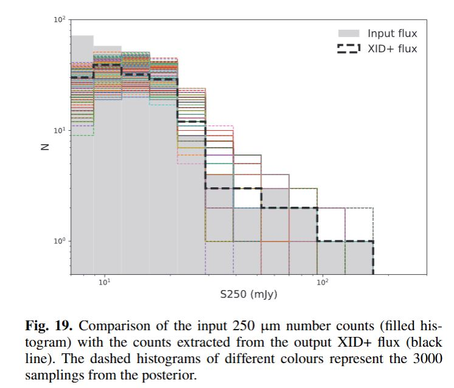
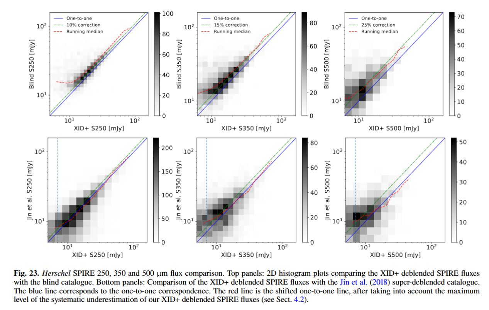
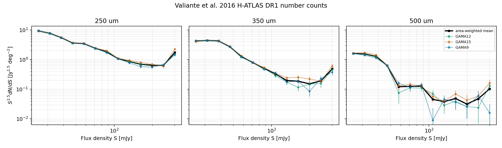

Supervisor Meeting Prep Sequel: Wang / Valiante Checks
Follow-up to the main supervisor_meeting_prep.md.
Goal:
check whether the SPIRE mismatch is a real pop-cosmos physics problem, or partly a Wang/Valiante data-handling / normalisation problem.
0. Rundown:
THe main comparisons I'm doing
A. Wang vs Jin is an object-by-object flux check
Question:
for the same matched source, does Wang measure about the same SPIRE flux as Jin?
What it uses:
-
Wang
master.dat.gz: XID+ deblended fluxes for COSMOS2020/Farmer sources. -
Jin 2018 FITS: older COSMOS2015-style super-deblended fluxes.
-
COSMOS2020 Farmer
ID_COSMOS2015bridge to match the two catalogues. -
matching and units are sane.
-
Wang and Jin agree well at 250 um.
-
Wang is lower than Jin at longer SPIRE wavelengths.
| band | matched strong sources | median Wang/Jin flux | read |
|---|---|---|---|
| 250 | 2297 | 0.996 | basically same as Jin |
| 350 | 885 | 0.870 | Wang about 13 percent lower |
| 500 | 265 | 0.815 | Wang about 19 percent lower |
So:
the Wang/Jin plot supports a modest long-wavelength flux-scale offset, not a factor-of-10 count problem.
B. Wang paper itself says the SPIRE XID+ fluxes can be low
Wang's own SPIRE simulation/validation says:
- output flux is close to unbiased at the bright end.
- toward fainter fluxes, median flux underestimation grows to roughly:
10%at 250 um15%at 350 um25%at 500 um
- they say this gets worse at longer wavelength because prior-source density increases from
0.34to1.34sources per beam from 250 to 500 um.
Figures that support this:
- Wang Fig. 15: simulation input flux vs XID+ output flux.
- Wang Fig. 19: simulation input number counts vs XID+ output counts.
- Wang Fig. 23: real COSMOS SPIRE flux comparison against HELP blind catalogue and Jin; red shifted line marks the expected systematic underestimation.
But:
10-25 percent in flux can move sources between bins, but it is not by itself enough to explain our largest factor 5-12 number-count offsets.
C. The area-corrected overlay is a number-count comparison
Question:
how many sources per deg2 per flux bin does each model/catalogue imply?
This is the plot:

Important:
- Clements / Glenn / Oliver / Pearson / Valiante / Varnish are published observed number-count tables.
- FSPS / ALESS / hybrid curves are pop-cosmos model-predicted number counts from the synthetic catalogue.
- Wang raw is not a published corrected count table. It is raw positive-flux source counts from Wang
master.dat.gz, divided by the COSMOS/Farmer area1.278 deg2.
So it is only partly apples-to-apples:
| curve/data | what it is | apples-to-apples with published counts? |
|---|---|---|
| Clements, Glenn, Oliver, Pearson, Valiante, Varnish | published observed differential counts, usually corrected for completeness/flux bias/deboosting | yes, these are the main benchmarks |
| FSPS | pop-cosmos model fluxes converted into differential counts | mostly yes as a model-vs-observation test |
| ALESS / hybrid SEDs | alternative model SED assumptions converted into counts | mostly yes as model-vs-observation tests |
| Wang raw | raw deblended catalogue counts in COSMOS | no, useful context only |
| Wang vs Jin | matched-object flux comparison | no, not a count comparison |
D. How far off are the model count curves?
This is from popcosmos_differential_count_evaluator_pooled_summary.csv, using all scored published count points.
Positive dex means model is above the observed published counts like Clements, Glenn, Pearson etc.. Each point is an individual flux-bin measurement
| model curve | N points | median log10(model/obs) | linear read |
|---|---|---|---|
| 50% ALESS | 188 | -0.044 | 0.90x low (-10%) |
| 25% ALESS | 188 | +0.126 | 1.34x high (+34%) |
| 75% ALESS | 188 | -0.200 | 0.63x low (-37%) |
| FSPS | 188 | +0.327 | 2.12x high (+112%) |
| ALESS | 188 | -0.367 | 0.43x low (-57%) |
Simple read:
- baseline FSPS is high overall.
- pure ALESS is too low overall.
- hybrid SEDs sit between them.
- the overlay is not saying every curve is high; it says the SED choice strongly changes the counts.
E. How bad is FSPS by band and flux regime?
| band | flux regime | N points | median log10(FSPS/obs) | linear read |
|---|---|---|---|---|
| 250 | 10-30 mJy | 17 | +0.109 | 1.29x high (+29%) |
| 250 | 30-100 mJy | 32 | +0.204 | 1.60x high (+60%) |
| 250 | 100-300 mJy | 7 | +0.689 | 4.88x high (+388%) |
| 350 | 10-30 mJy | 17 | +0.234 | 1.71x high (+71%) |
| 350 | 30-100 mJy | 27 | +0.227 | 1.69x high (+69%) |
| 350 | 100-300 mJy | 7 | +0.817 | 6.56x high (+556%) |
| 500 | 10-30 mJy | 15 | +0.361 | 2.30x high (+130%) |
| 500 | 30-100 mJy | 22 | +0.552 | 3.57x high (+257%) |
| 500 | 100-300 mJy | 5 | +1.076 | 11.92x high (+1092%) |
To understand where we get this: obs is the published number counts from the paper tables
We Take each published obs point e.g Valiante 500um at some flux bin (one point)
Interpolate the FSPS model curve to that same flux Compute log10(FSPS/ obs point) Then Group those ratios by the band and regime Then take median offset for each group
Simple read:
FSPS gets worse toward longer wavelength and brighter flux.
That is much larger than Wang's 10-25 percent flux bias.
F. Is Wang raw lower than the published count tables?
In the overlay, the black Wang raw curve is below the published observed count tables.
This is from popcosmos_differential_count_evaluator_scorecard.csv, using Wang raw counts with area 1.278 deg2.
| band | comparison points | median log10(Wang raw / published obs) | linear read |
|---|---|---|---|
| 250 | 60 | -0.315 | 0.48x low (-52%) |
| 350 | 42 | -0.340 | 0.46x low (-54%) |
| 500 | 27 | -0.276 | 0.53x low (-47%) |
| all | 129 | -0.315 | 0.48x low (-52%) |
Simple read:
Wang raw counts are about a factor of two below the published count tables.
But this might make sense because Wang raw is not a corrected number-count product.
Likely reasons:
- small COSMOS area:
1.278 deg2. - Wang is prior-selected and deblended, not a blind count catalogue.
- raw counts are not completeness-corrected.
- 350/500 um have larger beams and stronger blending.
- rare bright sources are poorly sampled in such a small field.
G. Current best interpretation
Wang helps explain a modest long-wavelength flux offset, but the much larger FSPS bright-end number-count excess is probably a model/SED/population issue, not just Wang calibration.
Table of all the main discrepencies + idea on why ?
| thing seen | size | what it probably means |
|---|---|---|
| Wang vs Jin flux offset at 350/500 | 13-19 percent low | Wang XID+ long-wave fluxes are slightly lower than Jin for matched sources |
| Wang paper expected SPIRE bias | up to 10/15/25 percent at 250/350/500 | confusion/prior density causes wavelength-dependent underestimation |
| Wang raw counts vs published counts | about 0.5x | Wang raw catalogue should not be treated as formal corrected counts |
| FSPS vs published counts | up to 5-12x high at bright 250-500 | model/SED/bright dusty population problem |
| ALESS vs published counts | about 0.43x overall | pure ALESS-like SED is too low overall |
| hybrids | closest overall | mixing FSPS with ALESS-like long-wave SED helps, but bright 500 remains hard |
H. Literature / web audit for explanations
Quick web audit, done to see whether this is a known kind of problem:
- I didn't find a paper that directly explains this exact pop-cosmos discrepancy. Wang is recent; ADS currently lists it as cited, but the strongest directly useful explanation is still Wang's own validation plus older SPIRE number-count papers.
- Wang et al. 2024 is itself the most directly relevant source. It says SPIRE XID+ flux underestimation grows from about
10%to25%from 250 to 500 um at the faint end, and links this to the higher prior-source density per beam. Source:https://arxiv.org/html/2405.18290v1 - Wang Fig. 23 uses the HELP blind SPIRE catalogue, not a Wang-published blind catalogue. It has
9382blind 250 um sources in COSMOS and3591matches to Wang. Source:https://arxiv.org/html/2405.18290v1 - Oliver et al. 2010 HerMES says many models fail at bright SPIRE counts above
100 mJy, and suggests model issues could involve SED variety/evolution or redshift distributions. Source:https://orca.cardiff.ac.uk/id/eprint/11014/1/SPIRE_galaxy_number_counts_at_250%2C_350%2C_and_500.pdf - Glenn et al. 2010 P(D) counts say many galaxy count models overpredict bright galaxies, and that beam/systematic uncertainties matter. Source:
https://arxiv.org/abs/1009.5675 - Valiante et al. 2016 H-ATLAS DR1 gives the wide-area corrected counts and says H-ATLAS counts are similar to HerMES at 250/350 with a small difference at 500. It also includes completeness and flux-bias corrections. Source:
https://arxiv.org/abs/1606.09615 - Recent Herschel work still treats source confusion and deblending as the central limitation. 3D-Herschel 2026 says Herschel can often only provide upper limits for lower-mass high-z sources because of source confusion, and warns MIR-to-FIR template conversions can be wrong without FIR data. Source:
https://arxiv.org/abs/2602.22384 - Super-resolution/deblending work after Wang explicitly motivates itself by the poor angular resolution of Herschel/SPIRE and the difficulty/fine-tuning of prior-driven deblending. Source:
https://arxiv.org/abs/2512.13353 - Bright 500 um counts can include strongly lensed galaxies. Negrello et al. selected
F500 >= 100 mJylensed candidates from H-ATLAS. This can matter for bright observed counts, though lensing would usually make observed bright counts higher, not explain FSPS being high. Source:https://ui.adsabs.harvard.edu/abs/2017MNRAS.465.3558N/abstract
What this supports:
- large SPIRE beams/confusion make catalogue-level comparisons hard.
- long-wavelength flux underestimation in Wang is real but modest.
- bright SPIRE number counts are known to be difficult for models.
- SED shape, dust temperature, redshift distribution, and rare bright/lensed populations are plausible physical/statistical explanations.
- our factor 5-12 FSPS bright-end excess is too large to blame only on Wang's 10-25 percent flux bias.
1.
Plots used below:


2. Wang Check
What I Tried
The relevant Wang paper figure for counts is Fig. 19:

input 250 um number counts vs XID+ output counts in a SIDES-style simulation.
can't exactly recreate Wang Fig. 19 from the released master.dat, because Fig. 19 uses simulated truth + XID+ output/posterior samples. The released master.dat is the real COSMOS deblended catalogue, not the simulation truth table.
Wang Catalogue
The Wang catalogue is not mainly a number-count table.
It provides:
- deblended point-source fluxes at known COSMOS/radio positions
- median fluxes and errors in
master.dat - posterior samples in
master_post.fitsin the full CDS release - cross-matched long-wavelength photometry for galaxy studies
limitation:
I only have master.dat.gz
can't exactly recreate plots that need:
- simulation truth
- posterior samples
- map cutouts
- blind catalogue inputs
- ALMA comparison catalogues
- COSMOS2020 physical parameters not stored in
master.dat
Wang Paper Details That Matter
From the Wang paper / local HTML:
FLAG_COMBINED = 0COSMOS2020 area is1.278 deg2.- SPIRE map units are already
mJy/beam. - Wang catalogue SPIRE fluxes are in
mJy. - SPIRE confusion noise is about:
6.8 mJyat 250 um6.3 mJyat 350 um5.8 mJyat 500 um
- Wang say their output counts are close to true counts above the 1-sigma instrument/noise scale, but fall below at fainter fluxes.
- Their SPIRE validation uses simulations, not the same object as published corrected observed count tables.
Wang Figure Audit
I went through the Wang figures again. Short version:
the best local comparison from our data is not the simulation count figure. It is a Wang-vs-Jin SPIRE matched-source diagnostic, similar in spirit to Wang Fig. 23 bottom panels.
| Wang figure | what it shows | can I reproduce from current local data? | useful for normalisation? |
|---|---|---|---|
| Fig. 1 | CIGALE predicted 24 um / IRAC flux ratios | no, needs CIGALE runs/training library | no |
| Fig. 2 | DLNN 24 um predictions vs CIGALE | no, needs DLNN test set | no |
| Fig. 3 | prior catalogue sky distribution | partly, only with positions inmaster.dat, but not initial prior construction |
no |
| Fig. 4 | progressive deblending flowchart | no, method schematic | no |
| Fig. 5 | DLNN PACS 100 um predictions | no, needs DLNN/CIGALE test set | no |
| Fig. 6 | DLNN SPIRE 250 um predictions | no, needs DLNN/CIGALE test set | no |
| Fig. 7 | real vs simulated map cutouts | no, needs maps/SIDES cutouts | no |
| Fig. 8-13 | MIPS simulation validation | no, needs simulation truth and posterior samples | no |
| Fig. 14-19 | PACS/SPIRE simulation validation | no exact recreation; needs SIDES true fluxes and XID+ posterior samples | useful conceptually |
| Fig. 19 | input 250 um number counts vs XID+ output counts | no exact recreation frommaster.dat; it is simulation truth/output, not real catalogue counts |
useful as warning: counts reliable above noise, not below |
| Fig. 20 | joint posterior for two close simulated sources | no, needs posterior samples/simulation | no |
| Fig. 21 | MIPS flux comparison to blind catalogue and Jin | partly possible if Le Floc'h 2009 MIPS blind catalogue is local | maybe |
| Fig. 22 | PACS flux comparison to blind catalogue and Jin | partly possible if PEP PACS blind catalogue is local | maybe |
| Fig. 23 | SPIRE flux comparison to blind catalogue and Jin | partly possible if HELP SPIRE blind catalogue is local; current version only does Wang-vs-Jin matched-source diagnostic | yes, useful sanity check |
| Fig. 24-25 | 850 um comparison to ALMA | no, needs AS2COSMOS/A3COSMOS ALMA catalogues | no |
| Fig. 26 | stellar mass vs redshift | not frommaster.dat; needs COSMOS2020 physical properties |
not for flux normalisation |
| Fig. 27 | SFR vs stellar mass by redshift | not frommaster.dat; needs SFR/Mstar catalogue |
not for flux normalisation |
| Fig. 28 | q250 distribution for MIGHTEE radio-only sources | not from current local files | maybe radio-specific only |
| Fig. B.1-B.2 | uncertainty/confusion-noise checks | no exact recreation without posterior/confusion products | useful conceptually |
Wang Raw Count Result
Using positive COSMOS2020 IDs and 1.278 deg2:
| band | N(>10 mJy) / deg2 | N(>20 mJy) / deg2 | N(>50 mJy) / deg2 | N(>100 mJy) / deg2 |
|---|---|---|---|---|
| 250 | 3011.7 | 849.0 | 36.8 | 1.6 |
| 350 | 2041.5 | 476.5 | 9.4 | 0.0 |
| 500 | 797.3 | 115.0 | 0.8 | 0.0 |
read:
- 250 um has enough raw Wang sources to be useful.
- 350 um bright end is thin.
- 500 um bright end is basically one object above 50 mJy and none above 100 mJy.
- So the Wang bright-end drop is not surprising once I look at the raw counts.
Raw count plot:
Wang Bright-End Issue
Bright sources should normally be easier to detect.
But for Wang, the issue is probably not simple detectability. It is more likely:
- small COSMOS area:
1.278 deg2 - rare bright sources
- prior-selected catalogue
- deblending choices
- radio-prior negative-ID rows
- 350/500 um larger beams and more blending
- raw catalogue counts are not corrected formal number counts
Useful numbers:
- Using
1.278 deg2instead of2 deg2raises densities by1.56x. - Including all Wang prior rows instead of only positive COSMOS2020 IDs raises counts by roughly:
1.3xto1.8xdepending on band/cut.
- SNR >= 3 barely changes bright counts above 20-50 mJy, so the bright issue is not mostly SNR threshold.
2b. Wang / Jin Normalisation Check
This is the best local diagnostic similar to something Wang actually does.
Wang Fig. 23 compares:
Wang XID+ deblended SPIRE fluxes vs blind catalogue / Jin super-deblended fluxes.

I can't reproduce the blind-catalogue top panels unless we have the HELP SPIRE blind catalogue locally.
But I can make a Jin-style matched-source comparison because we have:
- Wang
master.dat.gz - Jin super-deblended FITS catalogue
- pop-cosmos FSPS predicted SPIRE fluxes
Method:
- Wang IDs are COSMOS2020 Farmer IDs.
- Jin IDs are mostly older COSMOS2015-style IDs.
- use COSMOS2020 Farmer's
ID_COSMOS2015bridge to match Wang/pop-cosmos sources to Jin. - compare 250/350/500 um fluxes
- plot Wang vs Jin and FSPS vs Jin
ID bridge sanity check:
| check | value |
|---|---|
| pop-cosmos/Wang rows used | 114048 |
| rows with COSMOS2015 bridge | 108153 |
| ID-bridge matches to Jin | 72982 |
| coordinate matches within 1 arcsec | 80518 |
| matched by both ID bridge and coordinate | 72982 |
| coordinate-only extras | 7536 |
| ID-bridge median separation | 0.121 arcsec |
Matched-object scatter:

Ratio summary:

Key ratios for sources with both Jin and Wang SNR >= 3:
| band | N | median Wang/Jin | median FSPS/Jin | median FSPS/Wang |
|---|---|---|---|---|
| 250 | 2297 | 0.996 | 0.899 | 0.896 |
| 350 | 885 | 0.870 | 0.728 | 0.849 |
| 500 | 265 | 0.815 | 0.614 | 0.692 |
read:
- 250 um: Wang and Jin agree very well for strong common detections.
- 350 um: Wang is lower than Jin by about 14 percent in the median.
- 500 um: Wang is lower than Jin by about 19 percent in the median.
- FSPS is also lower than Jin in this matched strong-detection subset, especially at 500 um.
3. Valiante Bright-End Uptick
What I Checked
outputs/valiante_2016_hatlas_dr1_number_counts_quicklook.png
using the hand-entered Valiante DR1 tables:
- Table 5: 250 um
- Table 8: 350 um
- Table 9: 500 um
These are area-weighted across:
- GAMA9
- GAMA12
- GAMA15
Total area used in the paper/data:
- about
161.6 deg2
I also checked the Valiante paper text:
- the matrix-inversion source counts are shown in their Figure 16 and Tables 5/8/9.
- the paper says the GAMA fields are generally similar except at the brightest flux densities, where differences are due to cosmic variance.
- the table notes say the quoted uncertainties do not include correlation between flux bins.
Does The Uptick Exist In The Prepared Valiante Data?
Yes.
The last bin at 300 mJy jumps relative to the 244.2 mJy bin. This is visible directly in the table values / quicklook, so it is not produced by the later pop-cosmos evaluator.
| band | value at 244.2 mJy | value at 300 mJy | ratio |
|---|---|---|---|
| 250 | 0.639 | 1.756 | 2.75 |
| 350 | 0.192 | 0.486 | 2.53 |
| 500 | 0.0477 | 0.104 | 2.17 |
So:
the uptick is already in the Valiante prepared source table, not introduced later by the pop-cosmos evaluator.
Likely Interpretation
This is probably a real feature of the bright-end corrected H-ATLAS counts, or at least of the Valiante table.
Possible causes:
- rare bright source statistics
- local low-redshift galaxies
- lensed bright sources
- field-to-field variation
- binning at the extreme bright end
- Euclidean normalisation makes high-flux behaviour look visually strong
- correction/inversion method has larger uncertainty at the rare bright end
The quicklook shows all three GAMA fields rise in the last bin, so it does not look like one totally isolated field caused the whole effect.
4. Evidence List
Simple current evidence table:
| source | band | flux regime | result | possible reason |
|---|---|---|---|---|
| Wang raw catalogue | 250 | faint/mid | many sources; usable sanity check | released catalogue has enough 250 um detections |
| Wang raw catalogue | 350 | bright | very few bright sources | small area + larger beam + deblending/prior selection |
| Wang raw catalogue | 500 | bright | almost no bright sources | rare sources + small area + 500 um blending |
| Wang vs Jin matched fluxes | 250 | SNR>=3 | Wang/Jin median ~1.00 | flux units/matching look sensible |
| Wang vs Jin matched fluxes | 350 | SNR>=3 | Wang/Jin median ~0.87 | longer-wave deblending/systematic offset |
| Wang vs Jin matched fluxes | 500 | SNR>=3 | Wang/Jin median ~0.81 | strongest long-wave offset / lower N |
| Valiante DR1 | 250 | bright | last bin jumps up | rare/local/lensed bright sources or bright-bin correction |
| Valiante DR1 | 350 | bright | last bin jumps up | same, weaker than 250 but present |
| Valiante DR1 | 500 | bright | last bin jumps up | same, noisy but present |
| pop-cosmos FSPS vs external counts | 250 | 10-30 mJy | model high by ~0.11 dex | mild overprediction |
| pop-cosmos FSPS vs external counts | 250 | 30-100 mJy | model high by ~0.20 dex | mild/moderate overprediction |
| pop-cosmos FSPS vs external counts | 250 | 100-300 mJy | model high by ~0.69 dex | bright-end problem |
| pop-cosmos FSPS vs external counts | 350 | 10-30 mJy | model high by ~0.23 dex | long-wavelength issue begins |
| pop-cosmos FSPS vs external counts | 350 | 30-100 mJy | model high by ~0.23 dex | long-wavelength issue |
| pop-cosmos FSPS vs external counts | 350 | 100-300 mJy | model high by ~0.82 dex | strong bright-end problem |
| pop-cosmos FSPS vs external counts | 500 | 10-30 mJy | model high by ~0.36 dex | 500 um too bright |
| pop-cosmos FSPS vs external counts | 500 | 30-100 mJy | model high by ~0.55 dex | strong long-wavelength issue |
| pop-cosmos FSPS vs external counts | 500 | 100-300 mJy | model high by ~1.08 dex | strongest bright/long-wave issue |
Notes:
- positive log10 model/obs means model is above observed counts.
- FSPS gets worse from 250 to 500 um and from mid to bright flux.
- Hybrid/template models improve several regimes but do not fully remove the bright-end issue.
5. Current Hypotheses
Hypothesis 1: FIR SED shape is wrong
If the model is okay-ish at 250 but too high at 350/500:
the long-wavelength dust SED shape may be too bright, too cold, or too shallow.
This fits:
- 500 um is worse than 250 um
- hybrid/ALESS-style changes matter
- Casey/MBB templates sometimes improve specific regimes
Hypothesis 2: Bright dusty tail is too strong
If the model overpredicts bright counts:
pop-cosmos may have too many high-SFR dusty bright galaxies, or the dust/SFR scatter creates too many extreme objects.
This fits:
- bright-end residuals are largest
- FSPS is high at 100-300 mJy in all SPIRE bands
Hypothesis 3: Wang is not the formal count benchmark
If Wang alone disagrees:
it may be a catalogue/selection/deblending issue, not a pop-cosmos physics issue.
This fits:
- Wang is prior-selected and deblended
- raw counts are not completeness-corrected number counts
- 500 um bright end has tiny raw N
Hypothesis 4: Valiante bright-end is special population / correction territory
If Valiante has a real last-bin rise:
bright bins may include rare local galaxies, lensed systems, or correction/binning effects.
This means:
- do not overinterpret one bright bin as a smooth SED failure
- discuss bright bins separately, not only pooled chi-square
Hypothesis 5: If all corrected observations agree against FSPS, then physics is more likely
If Clements/Oliver/Pearson/Valiante all point the same way:
then the mismatch is more likely in pop-cosmos assumptions than in one observational catalogue.
This is why the evidence list should be by source, band, and flux regime.
7. Email Draft For
Hi both,
I have been trying to separate two questions in the SPIRE number-count comparison:
- is the disagreement due to catalogue/normalisation/selection handling?
- or is it pointing to a real physical limitation in the pop-cosmos far-IR predictions?
I reran the Wang catalogue checks using the Wang catalogue fluxes in mJy and the paper's FLAG_COMBINED=0 area of 1.278 deg2. The main result is that the raw Wang catalogue is very sparse at the bright end, especially at 500 um: for positive COSMOS2020 IDs I get only about 0.8 deg^-2 above 50 mJy at 500 um and none above 100 mJy. So I think Wang is best used as an object-level flux/residual check, rather than as the formal corrected number-count benchmark.
For Valiante, I checked the prepared H-ATLAS DR1 number-count table and the paper context. The bright-end uptick around S ~ 300 mJy is already present in the source table: the 300 mJy bin is about 2.2-2.7x higher than the 244 mJy bin across 250/350/500 um. The paper also notes field differences at the brightest fluxes due to cosmic variance. So this does not look like a downstream pop-cosmos plotting bug.
For Wang, the most useful local diagnostic is Wang vs Jin at matched source level, similar to the Jin-comparison part of Wang Fig. 23. I now match via the COSMOS2020 Farmer ID_COSMOS2015 bridge, then sanity-check the separation on sky. For sources with both Jin and Wang SNR >= 3, the median Wang/Jin ratios are about 1.00, 0.87, and 0.81 at 250/350/500 um. This supports the idea that the units/matching are sensible, while also showing a real wavelength-dependent offset at longer wavelengths.
For the model comparison, the clearest pattern is that baseline FSPS is above the observed counts, and the problem gets worse toward longer wavelength and brighter flux. The median log10(model/obs) for FSPS is roughly:
- 250 um:
+0.11,+0.20,+0.69dex from faint to bright regimes - 350 um:
+0.23,+0.23,+0.82dex - 500 um:
+0.36,+0.55,+1.08dex
My current physical hypotheses are:
- the far-IR SED shape may be too bright/too cold/too shallow at long wavelengths;
- the model may produce too many high-SFR dusty bright sources;
- Wang-specific disagreement is probably partly selection/deblending/small-area rather than pure physics;
- the very bright Valiante bins may be affected by rare populations, lensing, or correction/binning effects.
Does this framing sound sensible? In particular, would you expect a model that is reasonable at 250 um but high at 350/500 um to point more toward the dust SED shape, the star-forming tail, or something else in the population model?
Best, Mihir
8. Sources / Evidence Used
Local files:
Research project/Mres proj papers/wang et all.pdfProject coding/catalog data/wang/wang_2024_aa49055-23.htmlProject coding/catalog data/wang/master.dat.gzProject coding/catalog data/wang/ReadMe.txtProject coding/catalog data/Jin-et-all_files/COSMOS_Super_Deblended_FIRmm_Catalog_20180719.fitsProject coding/catalog data/external_number_counts/valiante_2016_hatlas_dr1_number_counts.csvProject coding/catalog data/external_number_counts/valiante_2016_hatlas_dr1_number_counts_area_weighted.csvpop_cosmos_notebook/outputs/popcosmos_wang_jin_fsps_flux_scatter.pngpop_cosmos_notebook/outputs/popcosmos_wang_jin_fsps_ratio_summary.pngpop_cosmos_notebook/outputs/popcosmos_wang_jin_fsps_ratio_summary.csvpop_cosmos_notebook/outputs/popcosmos_wang_jin_fsps_match_audit.csvpop_cosmos_notebook/outputs/popcosmos_model_family_flux_regime_summary.csvpop_cosmos_notebook/outputs/popcosmos_differential_count_evaluator_regime_summary.csv
External check:
- Wang et al. 2024 arXiv HTML:
https://arxiv.org/html/2405.18290v1 - Wang et al. 2024 A&A page:
https://www.aanda.org/articles/aa/full_html/2024/08/aa49055-23/aa49055-23.html - Wang catalogue CDS/VizieR:
https://cdsarc.cds.unistra.fr/viz-bin/cat/J/A%2BA/688/A20 - Oliver et al. 2010 HerMES SPIRE counts:
https://orca.cardiff.ac.uk/id/eprint/11014/1/SPIRE_galaxy_number_counts_at_250%2C_350%2C_and_500.pdf - Glenn et al. 2010 HerMES P(D) counts:
https://arxiv.org/abs/1009.5675 - Valiante et al. 2016 H-ATLAS DR1 arXiv page/PDF:
https://arxiv.org/abs/1606.09615 - 3D-Herschel 2026:
https://arxiv.org/abs/2602.22384 - Super-resolving Herschel 2025:
https://arxiv.org/abs/2512.13353 - Negrello et al. 2017 lensed 500 um sample ADS page:
https://ui.adsabs.harvard.edu/abs/2017MNRAS.465.3558N/abstract